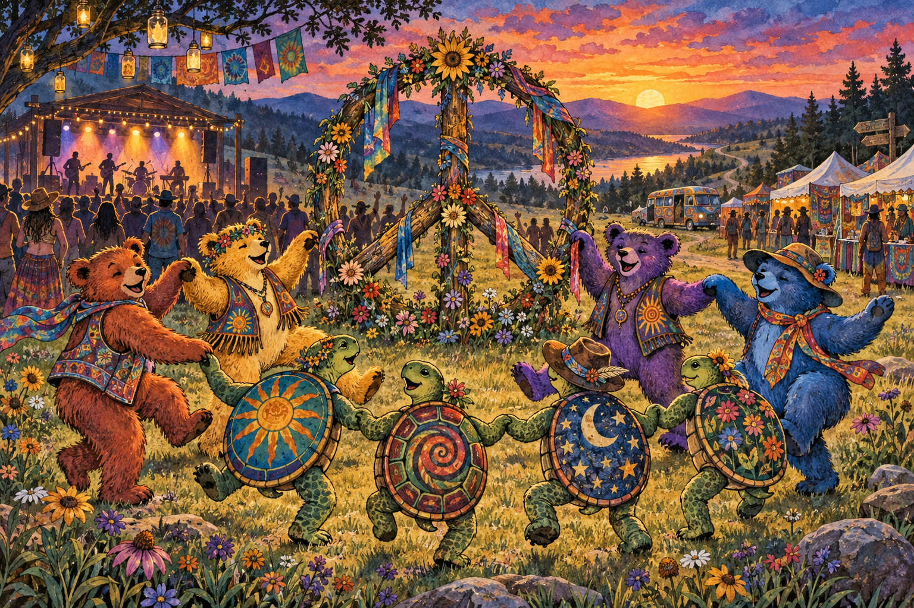
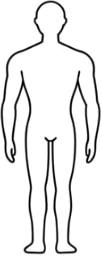
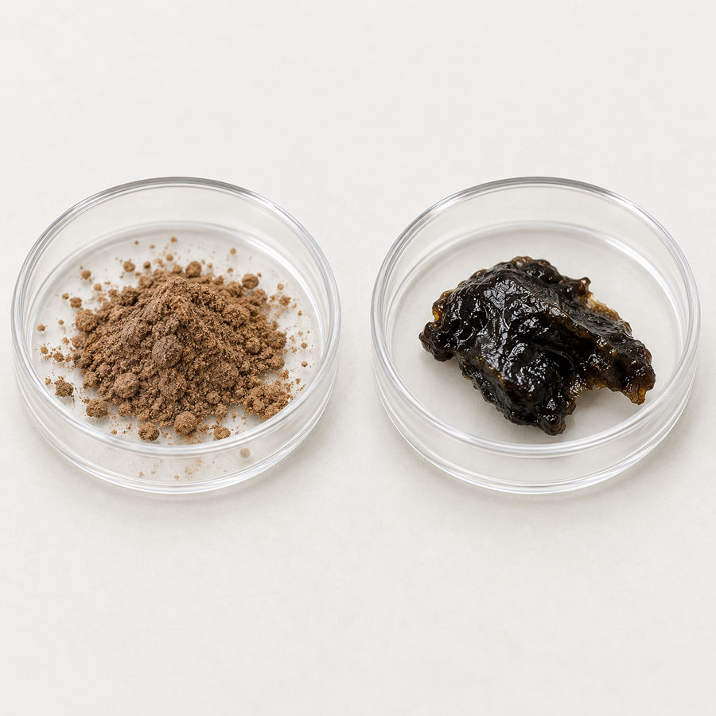

6.1 Dr. Rebecca Adams Goes on Tour with the Deadheads

Dr. Rebecca G. Adams, a sociologist at UNC Greensboro, began studying people who followed the Grateful Dead from concert to concert. The community became known as the Deadheads. What might look to an outsider like a series of concerts was also a traveling social world—with friendships, rituals, shared language, informal work, stories, identities, and expectations about how members should behave.
Adams’s research helps students avoid a common mistake: assuming a drug-using subculture must have formed only to obtain and consume drugs. The music and touring community came first for many participants. Yet illegal drug selling and use could still become woven into parts of the scene. For some, vending goods or drugs supported life on tour; for others, substances were peripheral or absent. Membership never proved drug use.
More than a concert
Repeated travel and shared experiences turned strangers into networks of friends, traders, caregivers, workers, and storytellers.
A portable social world
The group could teach meanings, opportunities, boundaries, safety practices, and ways to earn a living—some legal and some illegal.
Reference: UNC Greensboro, “Research on friendship, aging, and the Grateful Dead”.
6.2 Why do drug-using subcultures exist?
A subculture is a segment of a larger population whose members interact repeatedly and share a recognizable culture. That culture includes nonmaterial elements—values, norms, beliefs, language, stories, and identities—and material elements such as clothing, music, hairstyles, tools, spaces, and symbols. A deviant subculture organizes behavior that is at least partly in conflict with dominant norms. “Deviant” describes a relationship to social rules; it does not mean that every member is immoral, ill, or criminal.
Belonging
Recognition, intimacy, protection, and a place to feel normal.
Learning
Techniques, expected effects, rules, roles, and interpretations.
Access
Connections to substances, events, specialists, sellers, and health knowledge.
Identity
Symbols and narratives that distinguish insiders from outsiders.
Subcultures may form around religion, music, sport, occupation, neighborhood, or a stigmatized activity. Drug use can be central, secondary, or absent for some members. A group may normalize use while also controlling it through ritual, setting, etiquette, sanctions, caregiving, and informal harm reduction.
Drug street names: language changes faster than charts
A street name can shorten a chemical name, describe appearance or form, advertise an expected effect, conceal a topic from outsiders, or mark membership in a local scene. Meanings shift across neighborhoods, generations, online communities, and markets. One term can refer to several drugs, and one drug can collect hundreds of names.

| Formal or umbrella term | Selected historical/current examples | What students should notice |
|---|---|---|
| Cannabis | Marijuana, weed, pot, grass, ganja, herb | Some terms also carry religious, political, regional, or generational meanings. |
| Cocaine | Coke, blow, snow; crack for a particular form | A form-specific term should not be treated as a synonym for every cocaine product. |
| Methamphetamine | Meth, crystal, ice, glass | Appearance-based names do not reveal purity, dose, or contaminants. |
| Heroin and illicit opioids | Dope, smack, horse, black tar; “dope” can mean other drugs | Today’s opioid supply may contain fentanyl regardless of the name used. |
| MDMA | Ecstasy, Molly | A marketed name does not guarantee that a sample contains MDMA—or only MDMA. |
| LSD | Acid, blotter | “Blotter” describes a dosage form and cannot confirm the chemical on it. |
| Psilocybin mushrooms | Shrooms, magic mushrooms | Common terms may compress several species, strengths, and preparations. |
| Ketamine | K, Special K | Context matters because ketamine also has legitimate veterinary and human medical uses. |
| PCP | Angel dust | A familiar label can encourage assumptions about effects before an event is investigated. |
| Benzodiazepines | Benzos; bars for some tablet forms | Counterfeit tablets may imitate medicine while containing unexpected substances. |
6.3 Recruitment, selection, and socialization
Friends may resemble one another because people select peers who already share their interests and attitudes, because peers socialize one another after meeting, or because both processes operate together. Kandel’s longitudinal work helped separate these mechanisms in adolescent marijuana use. Goode and Johnson showed how unconventionality, shared social interests, and prior receptiveness could draw marijuana users together. These are probabilities, not a single “drug-user personality.”
6.4 Rastafari: livity, identity, and ganja
Rastafari developed in Jamaica in the 1930s within histories of colonialism, racial oppression, African identity, biblical interpretation, and resistance to “Babylon,” a term often used for oppressive institutions and values. There is no single central authority and practice varies across mansions, communities, and individuals. Dreadlocks and red, gold, and green are recognizable symbols, but appearance alone does not establish membership.
For many practitioners, cannabis—or ganja/herb—is a sacrament used in prayer, meditation, and reasoning: sustained communal discussion aimed at truth, spiritual insight, and unity. This meaning differs from purely recreational use. Not every Rastafari uses cannabis.


Ital livity: a variable practice, not one fixed menu
| Principle | Common expression | Important qualification |
|---|---|---|
| Vital, natural living | Fresh, minimally processed food; some reject synthetic additives and industrial modification. | Definitions of “natural” differ. Avoid turning one community’s practice into a universal rule. |
| Plant-centered eating | Many follow vegetarian or vegan diets; some understand consuming dead animals as taking death, suffering, or diminished vitality into the body. | Some eat fish or follow less restrictive versions. “Absorbing pain” should be presented as a belief held by some, not a biological fact. |
| Herb as sacrament | Ganja may accompany prayer, meditation, or reasoning. | Use varies, and Rastafari generally distinguishes sacred herb from intoxicants viewed as harmful. |
Language and symbols
| Term | Meaning in context | Sociological function |
|---|---|---|
| Ganja / herb | Cannabis, often framed as sacred or natural. | Distinguishes sacramental meaning from outsider drug labels. |
| Reasoning | Collective spiritual-philosophical discussion. | Transmits beliefs and produces shared interpretations. |
| Ital | A philosophy of vital, natural living and food. | Connects everyday consumption to identity and resistance. |
| Babylon | Oppressive colonial, political, economic, or cultural systems. | Names an out-group and explains resistance. |
| Chalice | A communal pipe used by some in ritual settings. | Marks specialized practice; not used by all adherents. |
6.5 Native American Church: peyote as medicine and sacrament
The Native American Church (NAC) emerged through Indigenous religious movements in the nineteenth and early twentieth centuries and now includes diverse tribal traditions. Meetings often integrate prayer, song, drumming, fire, water, testimony, and community healing. Peyote (Lophophora williamsii) contains mescaline, but members commonly understand the whole cactus as medicine or sacrament, not merely as a chemical delivery system.

Roles, objects, and specialist language
| Term | Meaning | Why it matters |
|---|---|---|
| Medicine / peyote | The sacred cactus used ceremonially. | Frames use through healing, relation, and religion rather than recreation. |
| Button | The harvested crown of the cactus. | Links ceremonial supply to ecology and harvesting practice. |
| Roadman | A leader who guides the meeting. | Authority organizes sequence, conduct, and interpretation. |
| Water drum / gourd rattle | Ceremonial musical instruments. | Material culture coordinates prayer, song, and collective attention. |
| Peyotero | A state-licensed South Texas harvester/distributor supplying peyote to eligible NAC members. | A bridge among law, landowners, ecology, market exchange, and religious access. |
6.6 Rave subculture: music, intensity, care, and risk
Rave scenes organize around electronic dance music, DJs, collective movement, altered sensory environments, late-night events, and temporary community. Participation does not imply drug use. In some scenes, however, MDMA and other substances became woven into expectations of energy, empathy, sensory enhancement, and endurance. Event design, peer norms, policing, commercialization, and harm-reduction services all affect behavior.

Argot and material culture
| Term or symbol | Meaning | Function / caution |
|---|---|---|
| Rave | Dance event or scene centered on electronic music. | Names a social world, not a single uniform culture. |
| PLUR | “Peace, love, unity, respect.” | An aspirational norm used to define good scene membership. |
| Kandi | Colorful bead bracelets exchanged by some participants. | Materializes memory, reciprocity, and connection. |
| Rolling | Scene term for experiencing MDMA effects. | Insider shorthand; meanings vary by era and location. |
| Pacifiers / lollipops | Especially visible in some 1990s scenes in response to jaw clenching. | Historical symbols, not recommended treatment; choking, dental, and hygiene risks remain. |
6.7 Anabolic-steroid subculture: disciplined bodies and hidden risk
Steroid subcultures may grow within bodybuilding, strength sport, appearance-focused fitness, and occupational settings where size or performance produces status. Members can exchange training knowledge, product reputations, injection routines, side-effect management, and moral distinctions between “serious” and “reckless” use. Secrecy is shaped by stigma, sport rules, prescription law, and fear of judgment. The disciplined physique can make pharmacological assistance less visible and risk feel controllable.

Common scene argot
| Term | General meaning | What it communicates |
|---|---|---|
| Gear / juice | Anabolic-androgenic steroids or related performance drugs. | Insider recognition and concealment. |
| Cycle | A planned period of use followed by a period without use. | A belief in disciplined management; it does not eliminate risk. |
| Stack | Using more than one performance-enhancing substance. | Expertise/status claims; combining substances can increase uncertainty and harm. |
| Pin | Scene shorthand for an injection. | Normalizes a technique while potentially obscuring infection risk. |
| PCT | “Post-cycle therapy,” a scene term for attempts to manage hormonal effects after use. | Informal medicalization; online advice is not a substitute for clinical care. |
What the muscular image can hide
Skin and injection
Severe acne, abscesses, and bacterial infections can occur. Sharing or reusing equipment adds blood-borne infection risk.
Heart, liver, kidneys
Risks include adverse cholesterol and blood-pressure changes, heart attack, stroke, liver tumors, and kidney damage or failure.
Hormones and mood
Sexual and reproductive effects, breast development or menstrual changes, irritability, mood symptoms, and depression after stopping may occur.
This overview is educational, not diagnostic. Effects vary by compound, exposure, co-use, individual health, and product contamination; some damage can be severe or irreversible.
6.8 Street heroin subculture and Faupel’s career model
Street heroin worlds can provide access, knowledge, identity, protection, companionship, and income while also exposing members to violence, arrest, exploitation, unstable supply, infection, and overdose. Argot helps people communicate quickly and recognize experience, but it changes across cities and generations. Today’s illicit opioid market also differs from the heroin market Faupel studied because illegally manufactured fentanyl has altered potency and overdose risk.

Historical and regional argot
| Term | General meaning | Sociological use |
|---|---|---|
| Dope / smack | Historically used terms for heroin; “dope” can mean other drugs. | Compresses meaning but is ambiguous outside a local scene. |
| Bag | A retail unit whose size/content varies. | Organizes exchange without guaranteeing dose or composition. |
| Works | Injection equipment. | Signals technical knowledge; sharing creates serious infection risk. |
| Nod | Visible heavy opioid sedation. | Members learn to interpret a bodily state that can be confused with overdose. |
| Sick | Experiencing withdrawal. | Explains urgency and how avoiding withdrawal can organize daily activity. |
Interactive: two conditions, four career patterns
Faupel’s typology is better understood as a 2 × 2 map than as four inevitable stages. Select a cell. People can remain, move in more than one direction, reduce use, enter treatment, or stop.
6.9 Afro-Caribbean and Latin American spirit traditions
Haitian Vodou, Cuban Lucumí/Regla de Ocha (often called Santería), Afro-Cuban Palo traditions, and Venezuela’s María Lionza religion are distinct traditions—not versions of one religion. Each formed through particular African, Indigenous, European, colonial, and national histories. Within ritual settings, alcohol and tobacco may function as offerings, substances handled by spirits through mediums, media for blessing or cleansing, and materials used in divination. Their meaning cannot be inferred from pharmacology alone.


Direct comparison of documented ritual patterns
| Tradition | Spiritual beings / powers | Alcohol examples | Tobacco examples |
|---|---|---|---|
| Haitian Vodou | Lwa; particular spirits and families have distinct preferences. | Kleren (cane spirit), rum, or liqueurs may be offered, consumed, applied, or sprayed. Pepper-infused rum is associated with some Gede performances. | Cigars or cigarettes may be offered to particular lwa, smoked by a possessed person, or used in blessing and cleansing. |
| Lucumí / Regla de Ocha | Orishas and ancestors; practice varies by ritual house. | Aguardiente, rum, gin, wine, or other offerings may be associated with particular orishas; Ogun is often linked with strong drink. | Tobacco may appear as an offering or cleansing medium in some communities, sometimes alongside related espiritismo practice; it is not identical across all houses. |
| Palo traditions | Mpungu and spirits of the dead, often called nfumbi/nfumbe. | Malafo commonly refers to rum or cane liquor offered or blown toward the nganga/prenda. | Tobacco may be offered, smoked, or blown toward ritual objects as part of communicating with or caring for the spiritual relationship. |
| María Lionza | Spirits organized into cortes (“courts”), including Indigenous, medical, African, and malandro courts. | Aguardiente, rum, beer, wine, or perfume may be offered, used in cleansing, or requested during possession according to the spirit. | Cigars and cigarettes may be smoked by mediums or spirits, used in smoke cleansing, or interpreted through ash, burn, and smoke patterns. |
Four ritual functions
1. Offering
Alcohol and tobacco can be gifts, “food,” or signs of respect within reciprocal relations between people and spirits.
2. Cleansing
Smoke or a fine spray of liquid may be directed over a person, altar, or object to bless, protect, or remove unwanted spiritual influence.
3. Possession
A spirit may be recognized through characteristic speech, gesture, drink, tobacco, clothing, or preferences. The community interprets the whole performance—not one dramatic act.
4. Divination
In some María Lionza and Palo settings, trained practitioners interpret a cigar’s burn, ash, flame, or smoke as signs.
6.10 When an illegal enterprise uses drugs to control people
Human trafficking is exploitation through force, fraud, coercion, or deception; movement across a border is not required. A criminal enterprise may introduce or encourage drug use, control the supply, create debt, threaten withdrawal, or use intoxication to increase compliance. Drugs may also be used to keep a person awake for labor or to blunt physical and emotional pain. These mechanisms occur in some cases—not every trafficking experience.
How a criminal subculture can reproduce control
Recruitment
Affection, belonging, money, housing, or drugs may be offered before demands and debts escalate.
Socialization
Rules, secrecy, roles, rewards, punishments, and specialized language normalize exploitation and discourage outside contact.
Dependence
Control of drugs, money, transportation, identification, and housing can make leaving physically and socially dangerous.
Labeling
Labels such as “addict,” “prostitute,” or “offender” may hide coercion and shape whether institutions recognize a victim.
The Big Three
| Perspective | What it reveals | Response implied |
|---|---|---|
| Functionalism | The enterprise organizes work, profit, sanctions, and roles while creating severe dysfunctions. | Coordinate housing, health care, treatment, education, and legal protection. |
| Conflict theory | The actor controlling drugs, money, documents, housing, and violence has disproportionate power. | Shift resources and legal protection toward survivors; pursue exploiters and profits. |
| Symbolic interactionism | Labels and repeated interactions can redefine identity and make exploitation appear normal or deserved. | Use survivor-centered language, peer advocates, and relationships that restore agency. |
6.11 Compare the social worlds
| Subculture | Organizing center | Drug meaning | Key control on behavior |
|---|---|---|---|
| Rastafari | Religion, African identity, resistance, livity | Herb may be sacrament and aid to reasoning | Spiritual distinctions between natural/vital and harmful |
| Native American Church | Indigenous religion, ceremony, kinship, healing | Peyote as medicine/sacrament | Ceremonial authority, tribal/religious norms, law, ecology |
| Rave | Music, dance, event community | For some, energy, empathy, sensory enhancement | Peer norms, setting, event rules, harm reduction |
| Steroid | Performance, appearance, discipline, status | Tool for body/performance goals | Training identity, secrecy, sport rules, informal expertise |
| Street heroin | Access, survival, relationships, street economy | Pleasure, relief, withdrawal avoidance, identity | Life structure and drug availability |
Central lesson: pharmacology matters, but substances do not supply their own meanings. Groups teach what a drug is “for,” how effects should be interpreted, who may use, what counts as acceptable use, and which risks deserve attention.
6.12 Analyze a subculture without stereotyping it
- Define membership: Who counts as an insider, and who gets excluded?
- Separate selection from socialization: What existed before entry, and what was learned afterward?
- Identify culture: Values, norms, beliefs, sanctions, argot, clothing, tools, places, rituals, and roles.
- Locate power: How do stigma, law, race, class, gender, medicine, religion, markets, and policing shape the group?
- Trace controls and harms: What limits behavior, what amplifies risk, and whose knowledge counts?
- Avoid essentialism: Do not treat one image, term, drug, or practice as proof of membership.
References
- Arrue, A., Gómez, F. M., & Giralt, M. T. (2004). Effects of 3,4-methylenedioxymethamphetamine (“Ecstasy”) on the jaw-opening reflex and on the alpha-adrenoceptors which regulate this reflex in the anesthetized rat. European Journal of Oral Sciences, 112(2), 127–133. https://doi.org/10.1111/j.1600-0722.2004.00114.x
- Cambridge Encyclopedia of Anthropology. (n.d.). Haitian Vodou. Retrieved September 19, 2026, from https://www.anthroencyclopedia.com/entry/haitian-vodou
- Faupel, C. E. (1991). Shooting dope: Career patterns of hard-core heroin users. University Press of Florida.
- Faupel, C. E., Weaver, G. S., & Corzine, J. (2014). The sociology of American drug use (3rd ed.). Oxford University Press.
- Golub, A., Johnson, B. D., & Dunlap, E. (2005). Subcultural evolution and illicit drug use. Addiction Research & Theory, 13(3), 217–229. https://doi.org/10.1080/16066350500053478
- Goode, E. (1970). The marijuana smokers. Basic Books.
- Hodgson, C. (2026). Drug-using subcultures. Beyond the Substance: Understanding Drugs in Culture & Society. https://soc245-what-is-a-drug.carollhodgson.chatgpt.site/topics/subcultures.html
- Harvard University Pluralism Project. (n.d.). “Santería”: La Regla de Ocha-Ifá and Lukumí. Retrieved September 19, 2026, from https://pluralism.org/%E2%80%9Csanter%C3%ADa%E2%80%9D-the-lucumi-way
- Human Relations Area Files. (n.d.). Alcohol in Haitian Vodou and Yucatec Maya ritual. Yale University. Retrieved September 19, 2026, from https://hraf.yale.edu/alcohol-in-haitian-vodou-and-yucatec-maya-ritual/
- Johnson, B. D. (1973). Marijuana users and drug subcultures. Wiley.
- Kandel, D. B. (1978). Homophily, selection, and socialization in adolescent friendships. American Journal of Sociology, 84(2), 427–436. https://doi.org/10.1086/226792
- Kerestetzi, K. (2019). Making a nganga, begetting a god: Materiality and belief in the Afro-Cuban religion of Palo Monte. Religion, 49(4), 611–632. https://doi.org/10.1080/0048721X.2019.1642262
- Lady Bird Johnson Wildflower Center. (n.d.). Higher ground. The University of Texas at Austin. Retrieved September 19, 2026, from https://www.wildflower.org/magazine/native-plants/higher-ground
- National Institute on Drug Abuse. (n.d.). Anabolic steroids and other appearance and performance enhancing drugs (APEDs). Retrieved September 19, 2026, from https://nida.nih.gov/research-topics/anabolic-steroids
- Pollak-Eltz, A. (1994). The Shango cult and other African rituals in Trinidad, Grenada, and Carriacou and their possible influence on the Spiritual Baptist faith. Paria Publishing.
- University of California, Santa Barbara, Interdisciplinary Humanities Center. (n.d.). The Ital diet. Retrieved September 19, 2026, from https://ihc.ucsb.edu/the-ital-diet/
- University of North Carolina at Greensboro. (n.d.). Research on friendship, aging, and the Grateful Dead. Retrieved September 19, 2026, from https://www.uncg.edu/research-on-friendship-aging-and-the-grateful-dead/
- United Nations Office on Drugs and Crime. (n.d.). Human trafficking. Retrieved September 19, 2026, from https://www.unodc.org/unodc/en/human-trafficking/human-trafficking.html
- United Nations Office on Drugs and Crime. (2024). Global report on trafficking in persons 2024. https://www.unodc.org/documents/data-and-analysis/glotip/2024/GLOTIP2024_BOOK.pdf
Content reviewed: September 2026. This educational coursebook does not provide medical or legal advice.